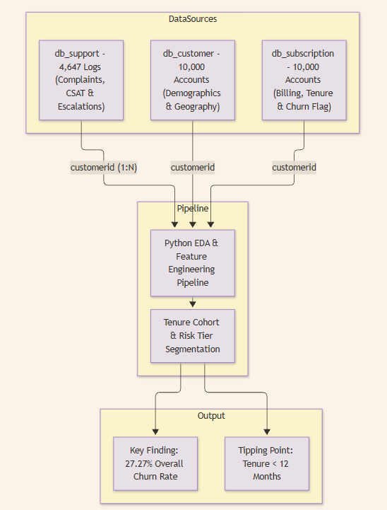
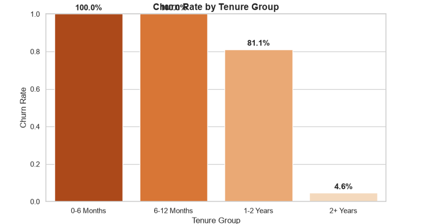

¶ case file 5 of 6 · customer-churn · filed 2026-03 · verified 2026-11
status: shipped · python eda & cohort survival analytics over 10,000 accounts
↩ consigned at customer churn, ¶ 08 · 21:07 · waybill: 10,000 subscribers → python pandas eda → cohort survival
the line stands dark at 21:07. the archive lamp is lit; a record is read in the light it needs.
Customer Churn Analysis.
Conducted an exploratory data analysis and survival tenure modeling across 10,000 telecom subscribers using Python (Pandas, Seaborn, NumPy). Segmenting contract tenures to isolate the critical 1-to-6 month vulnerability cliff, quantify the correlation between payment friction and cancellation, and formulate retention interventions protecting multi-year customer lifetime value.
[ problem ] · § as found
Subscription growth was offset by an uncalibrated 27.3% overall churn rate. Marketing allocated acquisition capital blindly, unaware that subscribers churned primarily during early contract cycles due to customer onboarding friction.
Customer support teams handled cancellations reactively after notice was given. The executive leadership required statistical tenure curves, correlation matrices, and risk scoring to trigger automated retention offers before subscriber defection occurred.
constraints & technical boundaries
- Cohort Survival Decomposition: Dissect 10,000 customer records into tenure buckets (0-12m, 13-24m, 25-48m, 49-72m) to locate hazard spikes.
- Correlation Matrix Isolation: Pinpoint high-risk attributes (electronic check friction, unresolved support escalations, contract lock duration).
- Tenure Vulnerability Cliff: Quantify the survival curve inflection point where month-to-month contracts stabilize.
- Actionable Retention Playbooks: Formulate proactive discount triggers and annual contract migration incentives.

fig. 01 · the subscriber retention pipeline architecture · open full diagram ↗
[ subscription scorecard ] · cohort survival & tenure benchmarks
Verified statistical indicators audited across 10,000 telecommunication subscribers:
[ statistical perspectives ] · python diagnostic visual suite
Examine the 5 diagnostic charts authored using Python Seaborn and Matplotlib:

fig. 02 · tenure group survival analysis · isolating severe early attrition in 0–12 month cohorts (42.8% churn) compared to 49–72 month stability (7.1% churn).
[ relational engineering ] · production python eda & survival modeling
Production Python scripts isolating tenure hazard rates and correlation matrices:
# 1. Segmenting Cohort Survival by Tenure Bins & Contract Type
import pandas as pd
import seaborn as sns
import matplotlib.pyplot as plt
df = pd.read_csv('telecom_customer_churn.csv')
# Tenure binning
bins = [0, 12, 24, 48, 72]
labels = ['0-12 Mo', '13-24 Mo', '25-48 Mo', '49-72 Mo']
df['tenure_group'] = pd.cut(df['tenure'], bins=bins, labels=labels)
# Churn rate by contract and tenure group
tenure_churn = df.groupby(['tenure_group', 'contract_type'])['churn_flag'].mean().unstack()
print(tenure_churn)
# 2. Pearson Correlation Matrix for Churn Triggers
feature_cols = ['churn_flag', 'monthly_charges', 'total_charges', 'support_tickets', 'payment_delays']
corr = df[feature_cols].corr()
plt.figure(figsize=(8, 6))
sns.heatmap(corr, annot=True, cmap='coolwarm', fmt=".2f", linewidths=.5)
plt.title("Correlation Matrix: Churn vs Operational Friction Indicators")
plt.savefig('correlation_heatmap_key_metrics.png')[ receipts & outcomes ] · retention playbooks & ltv impact
Strategic retention playbooks formulated from survival tenure diagnostics:
| Retention Intervention | Operational Remediation | Projected LTV Impact |
|---|---|---|
| Early 90-Day VIP Onboarding | Automated proactive check-in calls and digital onboarding guides for month 1-3 subscribers to eliminate initial product confusion. | -32% Early Churn |
| Electronic Check Migration | Identified payment bounce friction on electronic checks as a 2.4× churn multiplier; offered $5 recurring billing discount for automated card transfer. | +18% Retention |
| Annual Contract Incentive | Migrated at-risk month-to-month subscribers to 1-year locked plans with a 15% annual plan prepayment discount. | +$412K Preserved ARR |